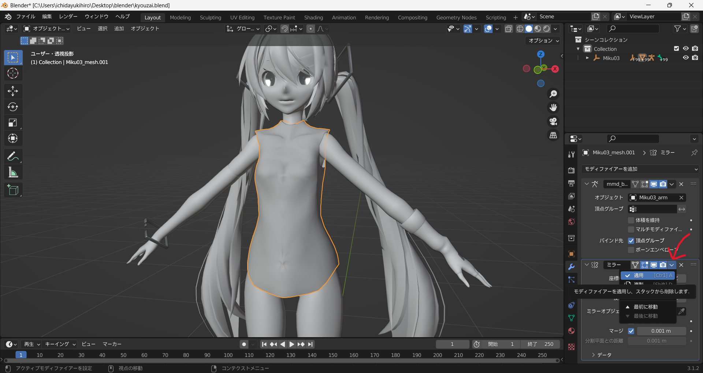
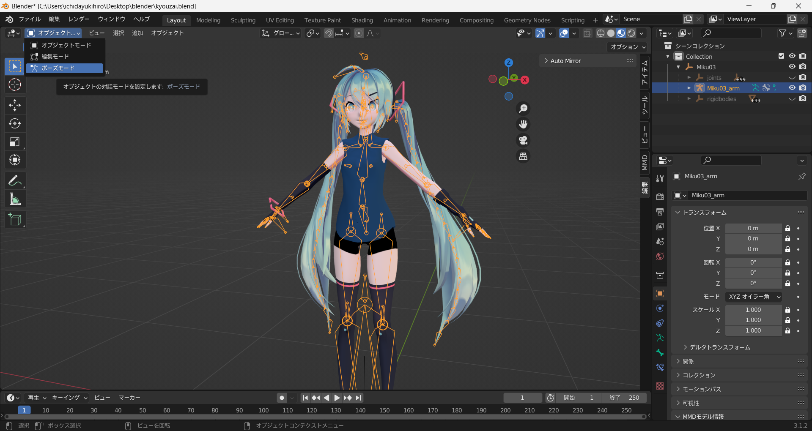
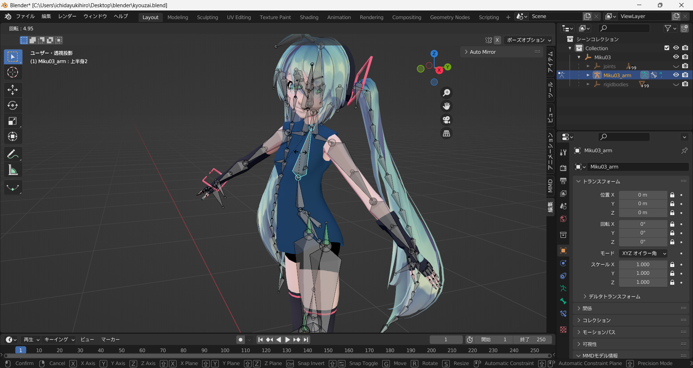

✅ blender 服を作る方法
📌 概要
blenderを使って作る時の基本的で簡単な方法を説明します。
1, 服の元となる原型の作り方
原型を作ると言っても、体を複製して原型を作成します。
まず、オブジェクトを選択し編集モードにし、作りたい服の上にカーソルを置く。
そして、キーボードの<L>を押すことでいい感じに選択してくれる。

この状態で<Shift>+<D>を押し、すぐに<S>押しマウスを動かすことで複製しサイズを大きくすることができるので、
体より少し大きくなるように調整する。
下の画像の赤丸のように隙間ができていればOK!!

服の原型を選択している状態で、<右クリック>→<分離>→<選択>の順番で押す。
こうすることで、体と服が別のオブジェクトになる。
一度オブジェクトモードにし、服の原型だけ選択して編集モードにする。そして、自分の作る服にいらない部分を選択してキーボードの<Delete>で削除する。
※点を選択したりするときのおすすめのやり方
・右上の四角と丸のマークを画像のようにすると選択しているオブジェクト以外が透けて見え、重なっている部分も同時に選択できるようになるので楽になることがある。
・下の画像に赤丸されている同じく右上にある物のx,y,z,-yなどを押すことで、その方向からまっすぐ見ることができるので楽になることがある。
2, 超重要：シェイプキーをなくしミラーをつける
服の原型のオブジェクトを選択する。そして、ミラーという左右対称に編集できるモデファイヤーをつけるためには、服の原型を右半分だけにする必要があるので、下の画像のように左側の頂点だけ選択し(真ん中にある頂点は選択しない)
<Delete>で削除する。
そして、残った右半分の服オブジェクトを選択して、右下の緑の逆三角形を押し、シェイプキーの右の<－>(マイナス)を押してシェイプキーを全てなくす。
下の画像のように全部なくなればOK!!(※上の画像で服の左半分あるけど気にしないで)
最後に、服オブジェクトを選択した状態で右下の青レンチマークを押して<モデファイヤーを追加>を選択、<ミラー>を押すことでミラーモデファイヤーをつけることができる。

下の画像のように、右側に頂点・辺・面が表示され選択できるようになっていて、左側には表示されていなければOK!!
これで楽に作業ができるようになったので、後は自分で好きな形に服を編集していこう！
※頂点を動かす時に使える便利機能
画面上にある⦿これを押すことで、頂点を動かす時に周囲の頂点に影響を与えながら動かすことができます。(⦿の右にある下矢印を押すと影響の与え方を変えれます。スムーズがおすすめ！)
実際に使う時は、頂点を選択してキーボードの<G>で移動させるのですが、下のが画像で赤矢印で指している灰色の円が影響を与える範囲で、これが画面に無い場合があります。
ですが、<マウスホイールの上下>で円のサイズを変えることができるので、マウスホイールをコロコロしてみましょう。
3, ミラーの適用
服が出来たらオブジェクトモードで服を選択して、右下の青レンチマークを押してミラーの右にある下矢印を押して適応を押すことで適応できる。

下の画像のようにモデファイヤーの欄からミラーがなくなればOK!!
4, ウェイトペイント：ボーンに追従させる
まず体を選択し、次に服を<Shift>+<左クリック>で選択する。
※絶対に体から選択して服を選択すること！順番が大事！
左上のモード切り替えから「ウェイトペイント」を選択
画面上部にある<ウェイト>を押して<ウェイト転送>を選択する(※1)。左下にある<メッシュデータの転送>
を押すことでメッシュデータを転送が展開される(※2)。
展開されたメッシュデータ転送を下のように変更します。
| 項目 |
設定 |
| 転送元レイヤー |
名前（By Name） |
| 対象レイヤー |
全レイヤー（All Layers） |
| マッピング方式 |
最近接面の補間（Nearest Face Interpolated） |
こうすることで体にあったウェイトが服にコピーされボーンに追従するときほぼ完璧に動いてくれる。(※ほぼ完璧な理由は、もしかしたら変になる可能性があるから。変になった時に細かく直さないといけなくなる。)
※ちゃんと動くかの確認方法
オブジェクトモードでボーンを選択して、左上のモード切り替えから「ポーズモード」にする。

動かしたいボーンを選択して<R>を押すことで角度を変えて確認できる。

5, 全てのオブジェクトを統合する
最後に服を作り終わったら、全てのオブジェクトを一つに統合します。
<Shift>+<左クリック>で全てのオブジェクトを選択し、<右クリック>→<統合>の順番に押せば完了です。